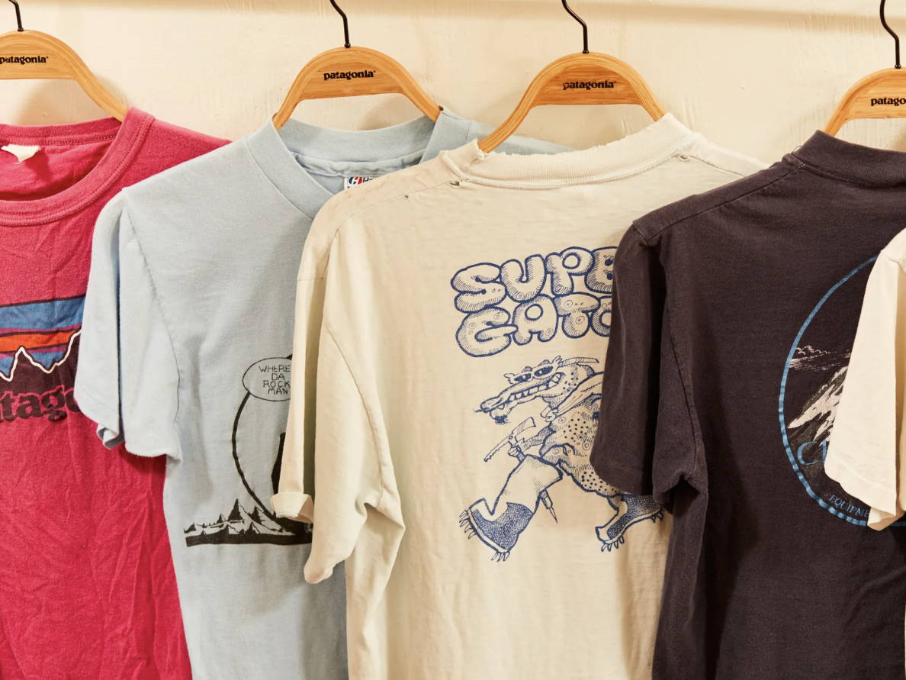
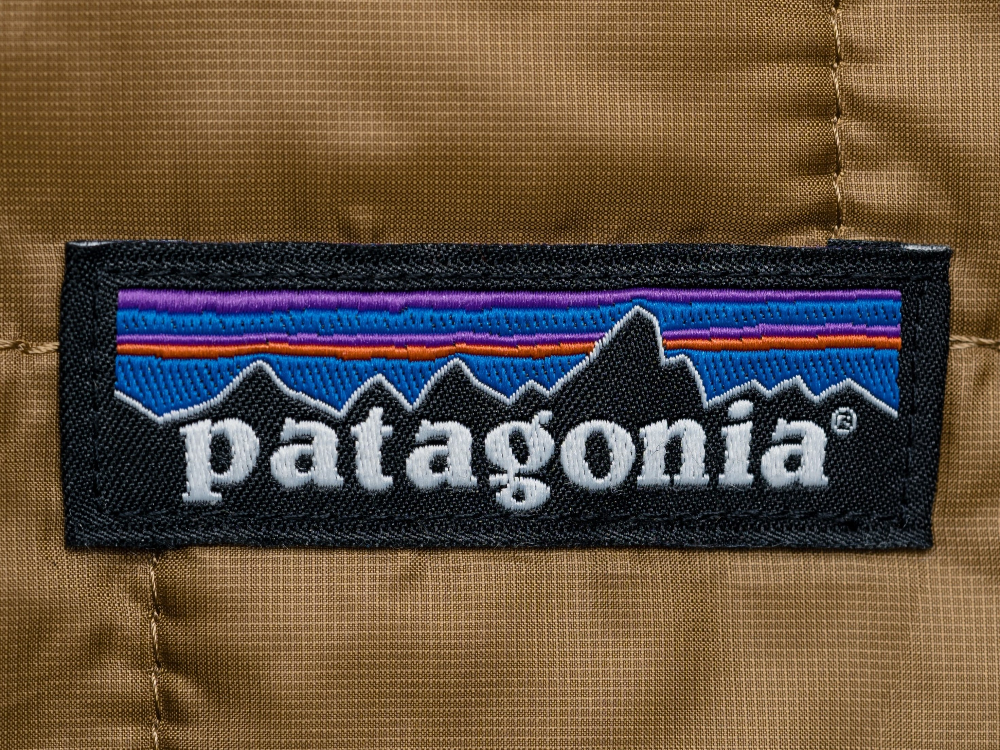

Short history of world-wide-known clothing brand.
Patagonia was still a fairly small company when we started to devote time and money to the increasingly apparent environmental crisis. What we began to read—about global warming, the cutting and burning of tropical forests, the rapid loss of groundwater and topsoil, acid rain, the ruin of rivers and creeks from silting-over dams—reinforced what we saw with our eyes and smelled with our noses during our travels.
On January 2012, Patagonia became the first California company to become a benefit corporation—a legal framework that enables mission-driven companies like Patagonia to stay that way as they grow and change. We are also a Certified B Corporation. To qualify as a B Corp, a business must have an explicit social or environmental mission and a legally binding fiduciary responsibility to take into account the interests of workers, the community and the environment, as well as its shareholders. To maintain B Corp certification, we must update and verify our qualifications every three years.
September 2022: the Earth is now our only shareholder. Nearly 50 years after Yvon Chouinard began his experiment in responsible business, ownership of Patagonia is transferred to two new entities: Patagonia Purpose Trust and the nonprofit Holdfast Collective. Every dollar that is not reinvested into Patagonia will be distributed as dividends to protect the planet. “Instead of extracting value from nature and transforming it into wealth, we are using the wealth Patagonia creates to protect the source,” said Chouinard. “I am dead serious about saving this planet.”
Photo examples
|  |  |